Filter Counts — project hub How a filter’s choices show their counts, on a desk and on a phone · drawn 2026-10-03 from the live coach and club Ledgers · D1–D6 accepted 2026-10-05 · built on dev 2026-10-05 · owner QA §263 passed 2026-10-05, 18/18 · committed fda3074d 2026-10-05
Design
Plan
Build
Review
QA
Shipped
Screen 1 · decisions 1, 2 and 3
One state, two wordings, and one cause
The coach’s Ledger with Status narrowed to Actual and Scheduled. Every frame on this hub is the live page captured at true size; a “proposed” frame is the same page with the change applied in place, using the product’s own styles. Each numbered marker opens its decision.
Before the options: the question is a little wider than the wording
The two wordings have one cause. Five filters write the count into each choice’s name (“Actual (23)”). Everything that repeats the name then repeats the count, which is why a closed pill reads “Status · Actual (23)”, and why the phone sheet had to cut the count back off to say “Actual, Overdue”. Take the count out of the name and most of the wording question answers itself.
The club’s numbers do not mean what the coach’s mean. On the coach’s Ledger a count says how many rows ticking that choice would show. On the club’s it counts the whole date window: it ignores the other filters and includes voided lines. “Expenses (7)” lists five rows. Moving that number to a nicer spot without fixing it would move a wrong number (screen 6, decision 5).
Desk and phone already differ at rest, on purpose. A desk pill at rest shows only its name (ruled 2026-09-02); a phone row always says what it is set to (ruled 2026-10-02). So “must they read identically” is really “should they use the same words whenever both say something”. I recommend yes.
Today
Desk · two choices
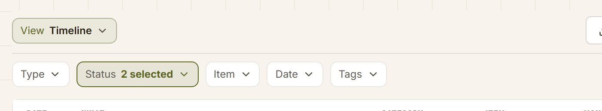
Today
Desk · one choice
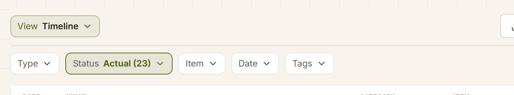
With one choice the count shows in the pill; with two it is gone. The count’s presence depends on how many are ticked.
Today
Phone · the same two choices
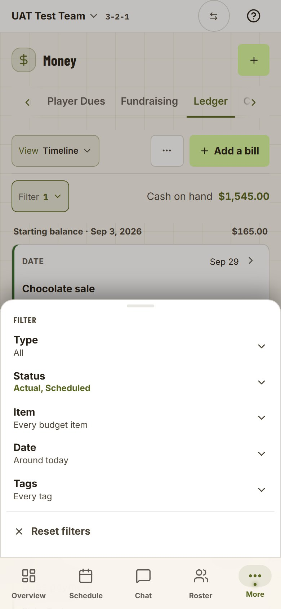
Screen 2 · decision 1
Where the count lives: in the name, or at the row’s end
Option B moves each count out of the choice’s name to the end of its row, quiet and lined up, which is exactly how the Awards report’s filter already draws it. The numbers themselves do not change.
Today
Coach · Status
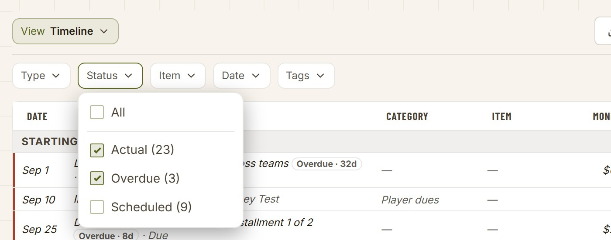
Proposed · B and C
Coach · Status
Restyled the count · Unchanged the list
Today
Club · Type (Date on All time)
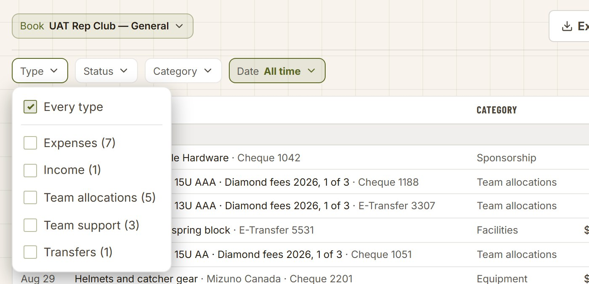
Proposed · B and C
Club · Type
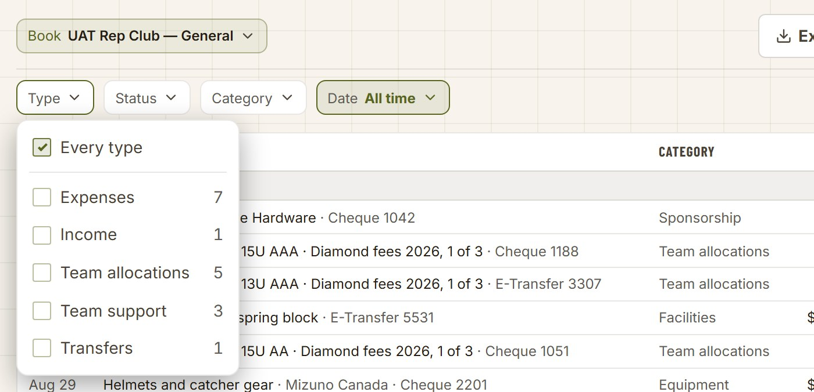
Today
Coach · Bills · Status
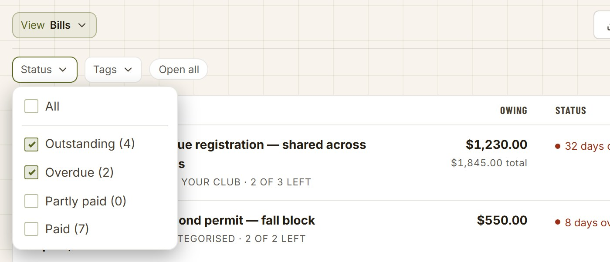
The cost of B
Coach · Bills · Status
Here Partly paid happens to be 0, so the overlap does not show; on a team with a late part-paid bill the four numbers add up to more than the bills listed.
Screen 3 · decision 2
What a narrowed pill says
Closed pills only. A is today. B drops the count from the pill but keeps “2 selected”. C names the choices, up to three, in the words the phone sheet already uses; four or more still reads “4 selected”. Each frame is the left part of the desk toolbar at true size.
Coach · Status
Today (A)
Proposed
One choiceActual
A: Status · Actual (23)
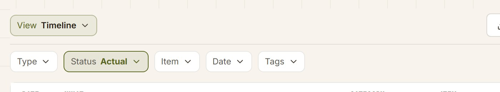
B and C: Status · ActualRestyled
Two choicesActual, Scheduled
A and B: Status · 2 selected
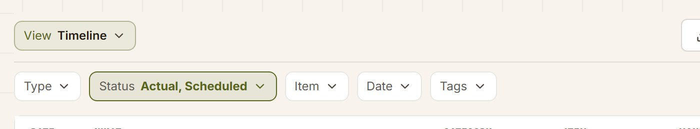
C: Status · Actual, ScheduledRestyled
Club · Type
Today (A)
Proposed
One choiceExpenses
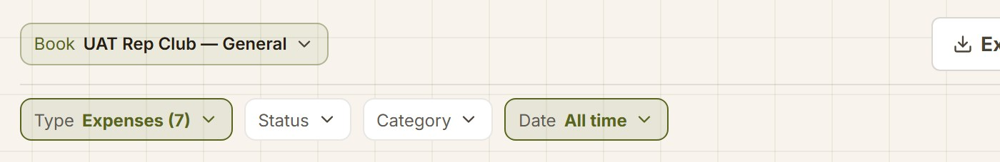
A: Type · Expenses (7)
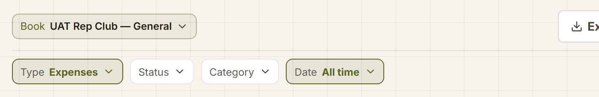
B and C: Type · ExpensesRestyled
Three choicesthe longest names on either Ledger
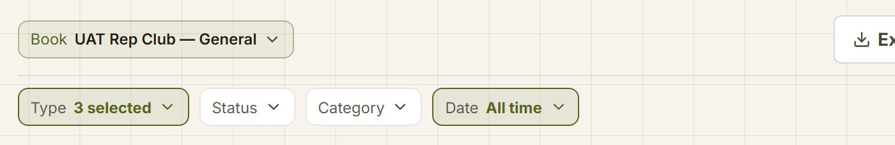
A and B: Type · 3 selected
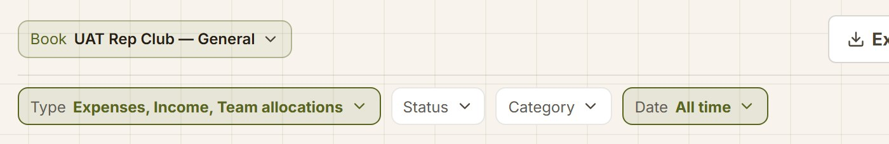
C: Type · Expenses, Income, Team allocations
Screen 4 · decision 2, its cost
The whole screen, with three filters narrowed
The coach’s Ledger on a 1024px desk (the narrowest desk, where the sidebar still shows) with Type, Status and Tags all narrowed. Option C’s names make the pills wider; the question is whether the filter line still fits on one line.
Filter line height
104px → 104px
Still one line of pills at 1024 and at 1280
Pill widths
+51 · +46 · −19
Type, Status and Tags. Tags gets narrower: “Spring classic (2)” loses its count
Room left at 1024
51px
The line is 740px; the pills reach 689px
Today
Coach · Ledger · 1024
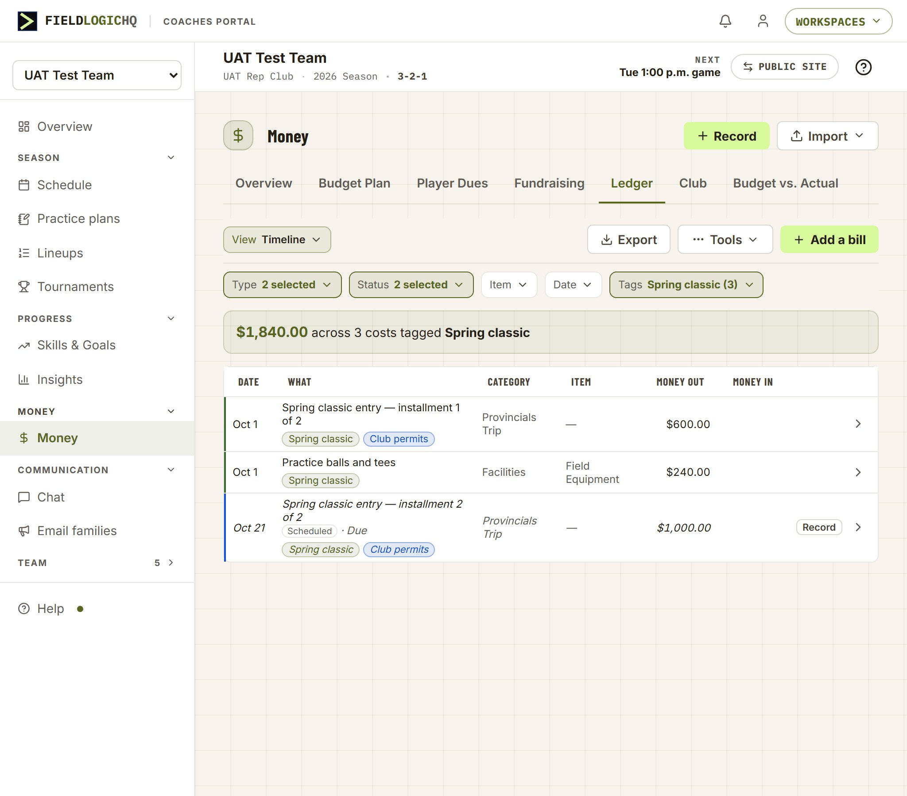
Proposed · C
Coach · Ledger · 1024
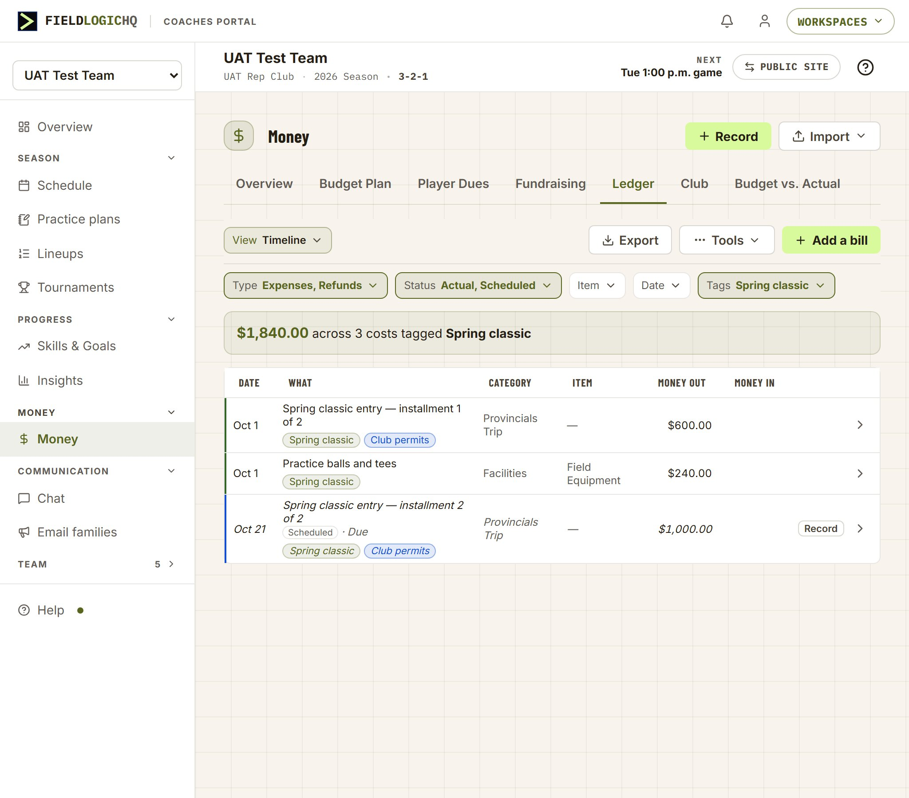
Unchanged everything below the filter line.
Screen 5 · decisions 1, 3 and 6
On a phone: the sheet’s rows keep their words; the choices move their counts
The Filter sheet with Status opened (coach) and Type opened (club). The row values already name the choices without counts, so only the open choices change.
Today
Coach · Status opened
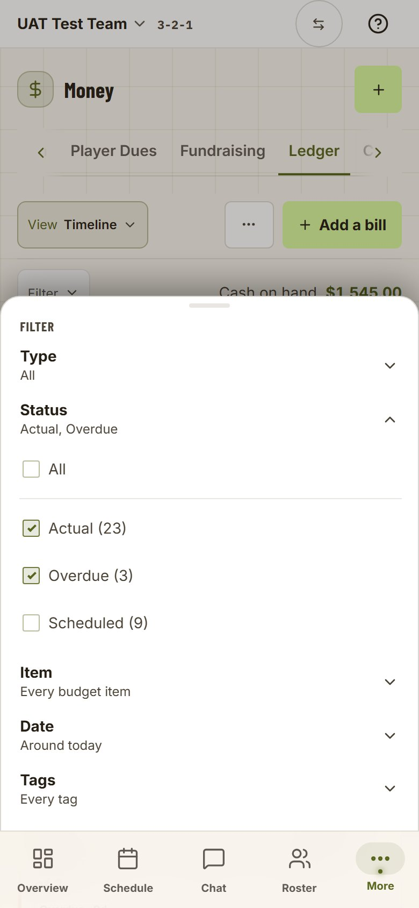
Proposed · B and C
Coach · Status opened
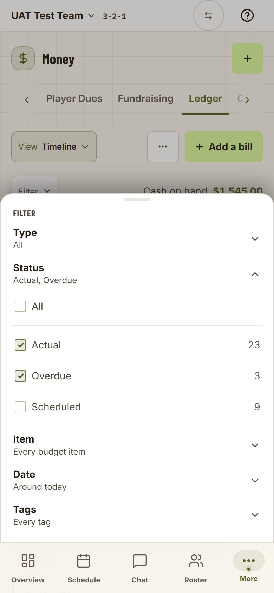
Restyled the choices · Unchanged the sheet
Today
Club · Type opened
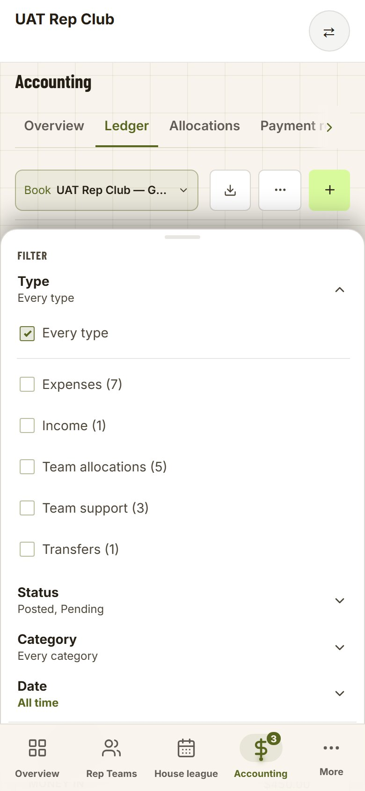
Proposed · B and C
Club · Type opened
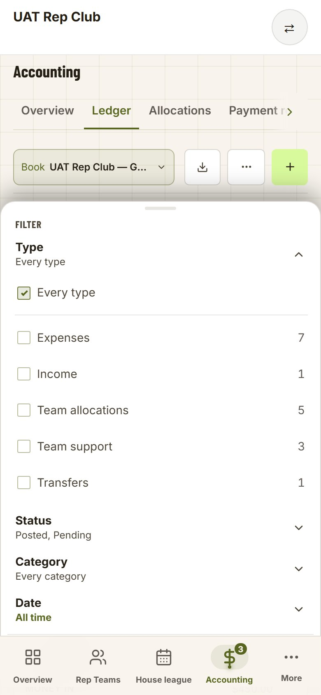
Screen 6 · decision 5 · found while drawing
The club’s numbers count something else
On the coach’s Ledger each number is a promise about the list: tick it and that many rows show, given the other filters (owner ruling 2026-08-26). The club’s Ledger counts every line in the date window instead, before any other filter and including voided lines, which the book hides until Status asks for them.
Expenses
7 → 5 rows
Two voided expenses are counted but not listed
Status with Expenses on
12 · 1 · 4
Posted, Pending, Void for the whole book, not for expenses
Ticking “All” on Status
Void stays hidden
It puts back Posted and Pending
Today
Club · Type set to Expenses (7), Date on All time
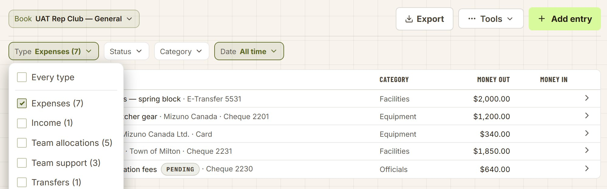
Today
Club · Status at rest
Today
Club · Status after ticking All
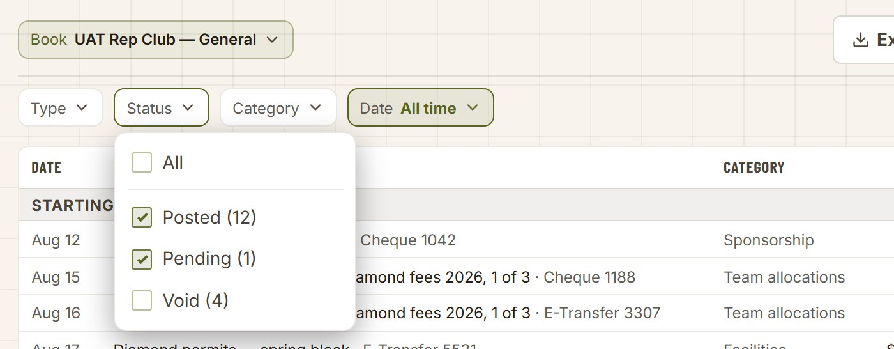
Screen 7 · decisions 4 and 6 · what a build would touch
Every surface the ruling would change
Six filters write their counts into the choice names, one already puts them at the row’s end, and five have no counts. Option C changes how every multi-choice pill reads when narrowed, so all twelve are listed.
Surface
Counts today
Where the count goes (D1)
Narrowed pill (D2, option C)
Other
Coach Ledger · Timeline · Status
In the name
Row’s end
Names up to three
—
Coach Ledger · Bills and Payment schedule · Status
In the name
Row’s end
Names up to three
Numbers overlap on purpose (Partly paid)
Coach Ledger · Tags (every view)
In the name
Row’s end
Names up to three
—
Coach Ledger · Type
None
—
Names up to three
“All” → “Every type” (D6)
Coach Ledger · Item
None
—
Names up to three
—
Club Ledger · Type
In the name
Row’s end
Names up to three
What it counts (D5)
Club Ledger · Status
In the name
Row’s end
Names up to three
What it counts, and “All” (D5)
Club Ledger · Category
None
—
Names up to three
—
Club · Payment requests · Team
None
—
Names up to three
—
Practice library · Tags (Drills, Templates, Circuits, the picker and the panel beside a plan)
In the name
Row’s end (D4)
Names up to three
One control, five places
Insights · Awards · Award
Row’s end already
Unchanged
Names up to three (D4)
—
The phone Filter sheet’s rows
Cut off
—
Unchanged words
Nothing left to cut off
Also touched: the coach’s Ledger help answer and its search terms, which quote “2 selected” and explain the overlapping counts. Not touched: the date pills and the single-choice pills (View, Book, Group by), which have no counts and name their one choice already.
Owner, 2026-10-05: “I agree with all of your recommendations.” Each marker on the Mockup tab opens its decision here.
D1 · Where the count lives: at the end of its row, not in the name
Accepted 2026-10-05
Every filter that shows counts shows them as a quiet number at the end of each choice’s row, in the open list on a desk and in the phone sheet alike. The count is no longer part of the choice’s name, so nothing that repeats the name repeats the count.
Recommended. The count is there to help a coach choose, so it belongs where they choose. Lined up at the row’s end it reads faster than brackets after names of different lengths. The Awards filter already does this, so it is one style, not a new one. The cost: a lined-up column invites adding up, and on Bills the numbers overlap on purpose (a late part-paid bill counts twice). The All row keeps no total, so nothing on screen claims they should sum.
Alternative: keep the count in the name (today, A). It keeps the closed pill’s “(23)”, which tells a coach how many rows they are looking at, but the list itself shows that, and the phone sheet would keep cutting the count off.
D2 · A narrowed pill names its choices, up to three
Accepted 2026-10-05
A pill narrowed to one, two or three choices names them: “Status · Actual, Scheduled”. Four or more reads “4 selected”. This is the rule the phone sheet’s rows already follow, now used on the desk pill too (option C). A pill at rest still shows only its name.
Recommended. “2 selected” tells the coach that Status is narrowed, not how; to find out they open the pill. Names answer it in place. The cost is width, measured on the live page: a pill grows 46 to 51px for two names and 152px in the worst case (three long club types). With three filters narrowed at 1024px the coach’s filter line still fits one line, with 51px to spare.
Alternatives: B, the pill names a single choice and keeps “2 selected” for more (no width cost, still unreadable at two); or names with a tail, “Expenses, Income +1”, which caps the width but names fewer.
D3 · Desk and phone use the same words whenever both say something
Accepted 2026-10-05
A narrowed desk pill and the matching phone row read identically (“Actual, Scheduled”), and a choice reads identically in both lists (“Actual … 23”). The one difference stays: at rest the desk pill shows only its name, while the phone row always says what it is set to.
Recommended. One spelling for one state is already a standing rule for words; this extends it to how a state is summed up. The difference at rest is deliberate on both sides: a quiet pill keeps a desk toolbar calm (ruled 2026-09-02), and the phone sheet is where a coach reads the whole state at once (ruled 2026-10-02). With D1 and D2 the two readings are one function, so they cannot drift apart again.
Alternative: let each keep its own rule (today). Cheaper, and it is how the two drifted apart within a day of the phone sheet shipping.
D4 · Awards and the practice library follow the same rule
Accepted 2026-10-05
The practice library’s Tags filter moves its counts to the row’s end (one control, used on the Drills, Templates and Circuits tabs, the picker and the panel beside a plan). The Awards filter already does; under D2 its narrowed pill names its awards too.
Recommended. It is the same control everywhere, so leaving one surface on the old style keeps two looks for one thing. The practice library was not on the list this project started from; it was found by searching for every filter that writes a count into a name.
Alternative: change the Ledgers only and leave the library for when its screens are next worked on. Practice screens are being worked on in parallel, so this is a fair choice if the timing matters more.
D5 · The club’s numbers count what ticking them would show, and “All” means all
Accepted 2026-10-05
On the club’s Ledger each count becomes what the coach’s already is: the rows you would see if you ticked that choice, with the other filters as they are, and a voided line counted only where Void is shown. Ticking All on Status shows everything, voided lines included.
Recommended, in the same build as D1. Today “Expenses (7)” lists five rows, and Status shows whole-book numbers while Type is narrowed, so the numbers stop being a promise about the list. Moving them without fixing them would move a wrong number. “All” on Status currently snaps back to Posted and Pending, so a treasurer asking for every line, the case an auditor asks about, never gets the voided ones that way.
Alternative: fix the numbers on their own, later. They are wrong regardless of where they sit, so this is a defect either way; the only question is whether it rides with this build.
D6 · The coach’s Type reads “Every type”, not “All”
Accepted 2026-10-05
The coach’s Type filter at rest reads “Every type”, matching the club’s Type and every other filter on both Ledgers (Every budget item, Every tag, Every category). Status keeps “All”, on both Ledgers.
Recommended. One word for one state is a standing rule, and the phone sheet now shows the two Ledgers’ Type rows side by side in a coach’s and a treasurer’s hands. A one-word change.
Alternative: leave it. It is the smallest of the six and could ride with whichever build touches the coach’s Type next.
Product-manager brief
Filter Counts
What changes for a coach or treasurer
When a filter list is open, each choice’s count sits at the end of its row in a quiet column, on a desk and on a phone, the way the Awards filter already shows it. When a filter is narrowed, its pill names what it is narrowed to (“Status · Actual, Scheduled”) instead of “2 selected”, in the same words the phone’s Filter sheet uses. On the club’s Ledger, the counts start meaning what they mean on the coach’s: tick a choice and that many rows show. “All” on the club’s Status shows every line, voided ones included.
Why it matters
Today one state reads two ways (“2 selected” on a desk, “Actual, Scheduled” on a phone), and a desk pill only says which choice is on when exactly one is. On the club’s Ledger the numbers disagree with the list under them (“Expenses (7)” above five rows), which undermines the screen a treasurer reconciles from.
Customer impact
Every coach who filters their Ledger, and every club treasurer. Small per visit, but these are the money screens, where a number that does not match the list costs trust. Nothing is added or removed; words and one placement change, and the club’s numbers are corrected.
Priority
Low effort, moderate value. The club’s count defect is the urgent part: it is live on the club’s Ledger, which is still before customers.
Success criteria
A narrowed filter can be read without opening it, at every width.
The desk pill, the phone row and the open list never show the same state in different words.
On both Ledgers, ticking a choice shows exactly the number of rows it promised.
Plan notes · for the build session
Filter Counts — what a build would change
Mockups only so far; no product code changed. These notes are a starting point for the plan, written from the code as it stood on 2026-10-03.
The shared control
components/coaches/MultiSelectDropdown.tsx already supports a per-option count (drawn by .multiSelectCount in components/shared/FilterPill.module.css). D1 = pass count at the call sites and stop writing (n) into labels; then bareLabel has nothing to strip and goes.
D2/D3 = one summary function for the pill and the sheet row (today the row has its own: up to three names, else “N selected”). The pill’s restQuiet behaviour is unchanged.
Call sites (D1)
Coach Ledger, app/[orgSlug]/coaches/teams/[teamId]/accounting/expenses/panel.tsx: Timeline Status, Bills/Payment schedule Status, and the Tags options built in tagFacts (the comment there says counts ride the label “one family, one look” — that reasoning flips with D1).
Club Ledger, app/[orgSlug]/admin/accounting/ledger/page.tsx: Type and Status.
Practice library, components/coaches/LibraryRow.tsxLibraryFilterBar (D4).
lib/club-ledger-read.ts: typeCounts are taken over every line in the window (all statuses, any category); counts.status comes from bookWindow in lib/club-money-figures.ts before Type and Category apply. Match the coach’s rule: each facet counted over the rows the other facets admit, voided lines only where Void is in the status set.
The page’s Status onChange maps an empty selection back to the rest set, and the route reads an empty status as the rest set, so “All” cannot be expressed. Send all three statuses for All.
Copy (D6) and help
Coach Type pill: allLabel="Every type".
The coach’s Ledger help answer and its keywords quote “2 selected” and explain the overlapping counts (lib/help-content/coaches.tsx, the money section). Run /docs after the build.
Formatting check (the portal’s written rules)
Figures sit right and tabular (the table standard’s rule for numbers); the count uses the Awards count’s quiet ink, so no new style is drawn.
One spelling for one state (the 2026-08-24 rule) is the basis of D3 and D6.
A lit pill keeps the olive working tint (quiet at rest, 2026-09-02); nothing here changes the tint or the pill’s height and tap floor.
Guards and checks
tests/unit/ledger-phone-filter-guard.test.ts pins the sheet; check whether it asserts the row summary before changing it.
A unit test for the club facet counts (Expenses with voided expenses in the window).
Probe recipe: .probe/fc/shots.mjs (desk 1280/1024, phone 390, warm and dark).
A filter’s count at its row’s end; a narrowed filter names its choices
Three walks, one job each, signed off one by one. Tick as you go; the ticks stay in this browser. Build a summary at the bottom and paste it back into the chat.
Sign in as
Where
http://localhost:3000/auth/login (restart the dev server first: this build added new files)
Coach (W1, W2, W3 step 6)
uat-coach@uat-test-org.local (password: UAT_COACH_PASSWORD in .env.local) · UAT Test Team, UAT Rep Club. The account may land on another team: switch first.
Club (W3)
uat-club-treasurer@uat-rep-club.local (password: UAT_REP_CLUB_TREASURER_PASSWORD) · UAT Rep Club
What the walks change: nothing in the database. Filters are not remembered except the coach’s date range, as before.
W1 · The coach’s Ledger on a desk
What this walk is for
On a desk, a filter’s choices show their counts at the end of each row, and a narrowed filter names what it is set to instead of “2 selected”.
It passes when
Every count sits at its row’s end with no brackets; a narrowed pill names its choices; Type reads Every type at rest; the filter line stays one line.
Not in this walk
The phone (W2) and the club (W3).
On a desk, sign in as the coach, switch to UAT Test Team and open Money → Ledger (View Timeline).
The filter line reads Type · Status · Item · Date · Tags, each showing only its name (none is narrowed yet).
Open Status.
All, then Actual, Overdue and Scheduled, each with its number at the end of its row in a quiet colour, the numbers lined up. No brackets after the names. Actual and Overdue are ticked.
Untick Overdue, then close the list.
The pill reads Status · Actual, lit, with no number in it.
Open Status again and tick Scheduled.
The pill reads Status · Actual, Scheduled (it used to read “2 selected”).
Open Type.
The first choice reads Every type (it used to read All).
Tick Expenses and Refunds, close the list, and narrow Tags to one tag.
Type reads Type · Expenses, Refunds and Tags names its tag. All five filters are still on one line. In a narrow window a long value ends in “…” rather than spilling past the line.
Switch View to Bills and open Status.
Outstanding, Overdue, Partly paid and Paid, each with its number at the row’s end. (A late part-paid bill counts under Overdue and Partly paid, so the numbers can add up to more than the bills listed — as before.)
Open the Ledger’s help (the ? at the top) and find the Timeline’s filters.
A sentence says each choice shows how many lines ticking it would show, and that a narrowed dropdown names what it is set to. Then switch back to Timeline and put the filters back (re-tick Actual and Overdue; clear Type and Tags).
W2 · The coach’s Ledger on a phone
What this walk is for
The phone’s Filter sheet uses the same words as the desk pill, and its open choices show their counts the same way.
It passes when
The sheet’s rows read Every type and Actual, Overdue at rest; open choices carry their number at the row’s end; a narrowed row reads the same words as the desk pill.
Not in this walk
The desk (W1) and the club (W3).
On a phone (or a window about 390px wide), sign in as the coach on UAT Test Team, open Money → Ledger and tap Filter.
The rows read Type Every type · Status Actual, Overdue · Item · Date · Tags.
Tap Status.
Its choices open in place, each with its number at the end of its row; no brackets.
Untick Overdue and tick Scheduled.
The Status row reads Actual, Scheduled in the lit colour — the same words the desk pill uses in W1 step 4.
Press Reset filters.
The sheet closes and the button reads a quiet Filter; opened again, Status reads Actual, Overdue.
W3 · The club’s Ledger, and the practice library
What this walk is for
On the club’s Ledger every number beside a choice is what ticking it would list, and All on Status shows every line, voided ones included. The practice library’s Tags follows the same style.
It passes when
The number beside a Type equals the lines it lists; Status’s numbers follow the other filters; All ticks and shows voided lines; the export still covers every entry in the period; the library’s counts sit at the row’s end.
Not in this walk
The coach’s Ledger (W1, W2).
On a desk, sign in as the club treasurer, open Accounting → Ledger and set Date to All time.
Type, Status and Category show only their names; Date reads All time.
Open Type, note the number beside Expenses, then tick Expenses.
Each choice’s number is at its row’s end. The list now holds exactly as many lines as that number (before this change the number also counted voided expenses the list hid).
Open Status.
Posted and Pending’s numbers add up to the lines listed; Void’s number is how many voided expenses there are.
Tick All.
All ticks. The voided expenses appear, struck through with a VOID chip, and the list holds Posted + Pending + Void lines. The pill reads Status · All, lit.
Open Export.
It still says Every entry in the period, not just what is on screen, with the same number of entries whatever the filters say. Close it and put Type and Status back.
Sign in as the coach and open Practice plans → Drills; open Tags.
Each tag (and No tags) carries its number at the row’s end; no brackets.